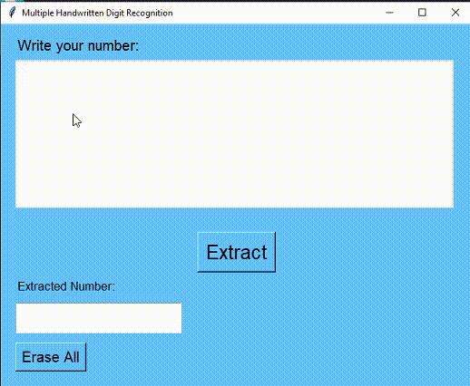

Multiple Handwritten Digit Recognition
Recognizing multiple digits from user-drawn input using CNN and GUI

GUI Working Demo
Project Overview
- Objective: Build an interactive tool to recognize multiple handwritten digits using a trained CNN model.
- Tools Used: Python, Keras, OpenCV, NumPy, PIL, Tkinter
Problem Statement
The aim of this project was to allow users to draw multiple digits on a canvas and have the system accurately extract, preprocess, and classify each digit using a convolutional neural network trained on the MNIST dataset. The solution includes an easy-to-use Tkinter-based GUI.
How It Works
- User draws digits on a white canvas using a mouse.
- Canvas image is saved and processed with OpenCV to extract digit contours.
- Each digit is resized and padded to match MNIST format (28x28 pixels).
- Digits are passed to a trained CNN model for classification.
- Predictions are displayed on both GUI and original image using OpenCV.
Model Details
- Architecture: 2 Conv2D layers + MaxPooling + Dropout + Dense layers
- Dataset: MNIST (60,000 training, 10,000 test images)
- Accuracy: Achieved over 98% on test set
- Loss Function: Categorical Crossentropy
- Optimizer: Adam
GUI Functionality
- Built using Tkinter, the interface includes a drawing canvas where users can write digits with their mouse.
- A “Extract” button processes the written digits and displays predictions.
- A “Erase All” button clears the canvas for new input.
- The drawn digits are saved as an image, processed using OpenCV (grayscale conversion, thresholding, contour detection), and then passed through the model for prediction.
Results
- The model achieves high accuracy on the MNIST dataset.
- It successfully detects multiple handwritten digits simultaneously, even when written close together.
- Predicted results are displayed on-screen with the probability of each prediction.